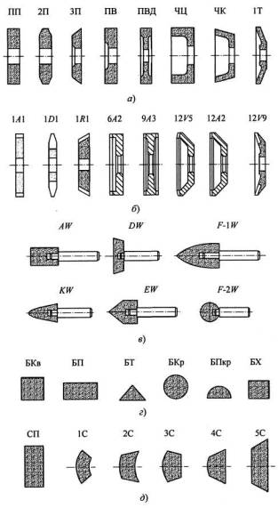
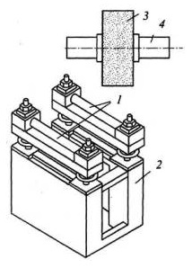

Абразивные инструменты на жесткой основе характеризуются формой и размерами, шлифовальным материалом, его зернистостью, связкой, твердостью, точностью, неуравновешенностью, а алмазные и эльборовые инструменты также и концентрацией зерен в рабочем слое.
Геометрические параметры абразивных инструментов задаются станком, на котором предполагается их использование, а также формой, размерами обрабатываемых поверхностей и характером движений инструментов.
Шлифовальные круги(а) применяются в том случае, когда основное движение вращательное. Поэтому они представляют собой различные по форме тела вращения. Кратко рассмотрим области применения кругов основных форм исполнения.
Плоские круги прямого профиля ПП применяют для круглого наружного, внутреннего и бесцентрового шлифования, для плоского шлифования периферией круга и для заточки инструментов. Плоские круги с двухсторонним коническим профилем 2П применяют для вышлифовывания зубьев шестерен и шлифования резьбы. Плоские круги с выточкой ПВ и с двухсторонней выточкой ПВД позволяют помещать в выточках зажимные фланцы, а благодаря этому, совмещать круглое шлифование с подрезкой торца. Эти круги применяют также в качестве ведущих кругов при бесцентровом шлифовании.
Цилиндрические и конические круги-чашки ЧЦ и ЧК применяют для заточки инструментов и для плоского шлифования торцом.
Тарельчатые круги Т применяют для заточки и доводки передних граней фрез, обработки зубьев долбяков и других инструментов.
Алмазные круги (6) бывают плоского прямого профиля, чашечные, тарельчатые, дисковые и другие и применяются для заточки и доводки твердосплавных инструментов, а также для шлифования труднообрабатываемых и резки неметаллических материалов.
Эльборовые круги имеют формы, подобные алмазным кругам. Их применяют для шлифования закаленных сталей ( 60 HRCЭ), чистовой заточки инструментов из быстрорежущих сталей, при чистовом шлифовании резьб, а также для обработки жаропрочных и коррозионно-стойких сталей.
Размеры шлифовальных кругов следует брать возможно большими, так как в этом случае улучшаются условия шлифования и снижается стоимость обработки. При этом верхний предел размеров круга ограничивается конструкцией и размерами станка, а иногда размерами и формой обрабатываемой заготовки. Так, например, при шлифовании отверстий диаметр круга должен быть не более 0,7...0,9 диаметра обрабатываемого отверстия.
Шлифовальные головки (в) - это шлифовальные круги небольшого диаметра (3...40 мм). Такие круги приклеивают к стальным хвостовикам и применяют для внутреннего шлифования и для ручной зачистки заготовок с помощью шлифовальных машин.
Шлифовальные бруски (г) используют в инструментах, совершающих возвратно-поступательное движение: при слесарных работах, а также при хонинговании или суперфинишировании. В последних случаях бруски закрепляют в специальных стальных головках.
Шлифовальные сегменты (д) применяют для плоского шлифования. В этом случае шлифовальный круг состоит из нескольких сегментов, закрепленных в головке или патроне.
Шлифовальные шкурки - это абразивные инструменты на гибкой (бумага, ткань, металлическая лента) или комбинированной основе (бумага и ткань) с наклеенным на нее слоем шлифовального материала, закрепленного связкой. Шкурки выпускают в виде листов, лент и применяют для ручной и машинной зачистки и отделки деталей.
Шлифовальные материалы - это абразивные материалы , подвергнутые сортировке, дроблению, измельчению и очистке от посторонних веществ. Они выбираются в зависимости от физико-механических свойств обрабатываемого материала и условий шлифования. Так, например, круги из электрокорунда белого применяют в основном при чистовой и отделочной обработке закаленных сталей, а также углеродистых, быстрорежущих, легированных и коррозионно-стойких сталей.
Круги из электрокорунда нормального широко применяют на обдирочных и чистовых операциях обработки материалов, имеющих высокий предел прочности на растяжение.
Абразивные инструменты из карбида кремния применяют в основном для обработки твердых и хрупких материалов, например, чугунов, бронз и т.д. Крупнозернистые круги из карбида кремния используют для обработки неметаллических материалов и правки шлифовальных кругов.
Круги из монокорунда используют чаще всего для получистовой и чистовой обработки средне- и высоколегированных сталей, подвергнутых хромированию, азотированию и закалке.
Круги из хромотитанистых электрокорундов используют на операциях, где имеется опасность появления прижогов или требуется высокая стойкость инструментов, особенно по сохранению профиля рабочей поверхности.
Для заточки и вышлифовки канавок инструментов из закаленных инструментальных сталей используют эльбор, а из твердых сплавов - синтетический алмаз.
Совокупность абразивных зерен шлифовального материала в установленном интервале размеров называют фракцией, а преобладающую по массе, объему и числу зерен фракцию называют основной фракцией.
Условные обозначения, соответствующие размеру зерен основной фракции, называют зернистостью.
В зависимости от размера зерен шлифовальные материалы делят на четыре группы:
1) шлифзерно - 2500...160 мкм (номера от 200 до 16);
2) шлифпорошки - 160...40 мкм (от 12 до 4);
3) микропорошки - 63...10 мкм (от М63 до Ml4);
4) тонкие микрошлифпорошки - 10...3 мкм (от М10 до 5).
Алмазные материалы делят на шлифпорошки и микропорошки. Размер шлифпорошков находится в пределах от 630 до 40 мкм (по размерам ячеек верхнего и нижнего сита), а размер микропорошков - от 60 до 1 мкм и менее (контролируется на микроскопе). Зернистость алмазных порошков обозначается дробью, в которой числитель соответствует наибольшему размеру зерен основной фракции, а знаменатель - наименьшему размеру, например: 400/250, 250/160 и т.д.; алмазных микропорошков - 60/40, 40/28 и т.д.; эльборовых порошков - ЛЗ15/250 (Л25), Л250/200(Л20) и т.д.
Зернистость абразивного круга зависит от вида шлифования, требуемой шероховатости и точности обработки, материала заготовки и снимаемого припуска. Чаще всего применяют абразивные круги средней зернистости 40...16, которые обеспечивают высокую производительность при требуемой шероховатости и точности обработки.
Номер зернистости круга увеличивают: для уменьшения опасности «засаливания» круга и появления прижогов на заготовке; при увеличении припуска на обработку; для увеличения производительности процесса шлифования; при увеличении скорости шлифовального круга; при переходе от кругов с керамической связкой на круги с бакелитовой или вулканитовой связками; при увеличении вязкости и уменьшении твердости материала заготовки; при уменьшении номера структуры круга.
При использовании алмазных кругов рекомендуется брать: для предварительного шлифования круги зернистостью - 200/160...100/80 (марок АС4, АС6), для чистового шлифования - зернистостью 80/63...50/40 (марок АС2, АС4), для доводочного шлифования - зернистостью 40/28 и мельче.
В случае, когда предварительное и окончательное шлифование производятся одним кругом, следует применять круги зернистостью 100/80...63/50 (марок АС4, АС6).
Связка абразивных инструментов служит для сцепления зерен шлифовальных материалов и удержания их от преждевременного выкрашивания в процессе шлифования. Она оказывает большое влияние на работоспособность абразивных кругов. От количества, вида, качества и равномерности распределения связки в абразивном круге зависят твердость, прочность, структура, неуравновешенность круга и допускаемая скорость шлифования.
В процессе резания затупившиеся зерна выкрашиваются или раскалываются, обнажая новые острые кромки, т.е. инструмент самозатачивается, автоматически поддерживая свои режущие свойства. При неправильно выбранной связке происходит ненормальный износ абразивных инструментов, характеризуемый либо «засаливанием», когда инструменты теряют свои режущие свойства вследствие засорения пор размельченной связкой и стружкой, либо осыпанием вполне работоспособных зерен. В первом случае на обрабатываемой поверхности наблюдаются прижоги, а во втором случае - повышенный износ кругов.
Для изготовления абразивных кругов применяют неорганические (керамические, силикатные) и органические (бакелитовые, вулканитовые) связки. Из них наиболее распространены керамическая, бакелитовая и вулканитовая связки.
Керамическая связка (КО, К1, К3 и др.) состоит из огнеупорной глины, полевого шпата, кварца и других материалов. Круги на керамической связке обладают высокой прочностью и кромкостойкостью, допускают применение СОЖ. Однако они хрупки и малоупруги, и поэтому тонкие круги на керамической связке не могут воспринимать боковые нагрузки.
Круги на керамической связке изготавливают с использованием электрокорундов и карбида кремния и применяют для всех видов шлифования, за исключением отрезки и прорезания узких пазов.
Бакелитовая связка (Б, Б1, Б2 и др.) представляет собой бакелитовую смолу (пульвербакелит) в виде порошка и бакелитового лака. Абразивные круги с такой связкой обладают высокими прочностью и упругостью, что позволяет изготавливать их малой толщины. Недостатком бакелитовой связки является ее низкая теплоемкость, вследствие чего связка при температуре 250...300°С выгорает, а зерна абразива выкрашиваются. Обычно круги на бакелитовой связке применяют при шлифовании всухую, так как при работе с СОЖ прочность и твердость таких кругов резко снижается. Круги на бакелитовой связке с добавлением наполнителя - криолита обладают повышенной стойкостью.
Вулканитовая связка (В, В1, В2 и др.) в основе имеет синтетический каучук, смешанный с небольшим количеством серы. По сравнению с кругами на бакелитовой связке, круги на вулканитовой связке более упруги, но менее теплостойки. Поэтому такая эластичная связка позволяет создавать тонкие, до десятых долей миллиметра, отрезные круги диаметром 150...200 мм.
Алмазные и эльборовые круги изготавливают на бакелитовой, металлической и реже на керамической связках. Из них наиболее часто применяется металлическая связка.
Металлическая связка изготавливается из сплавов на основе меди, олова, железа, алюминия и других металлов. Она отличается высокой прочностью и износостойкостью. Круги на этой связке длительно сохраняют рабочий профиль и применяются в основном при съеме небольших припусков.
Структура абразивного инструмента характеризует строение абразивного инструмента в зависимости от количественного соотношения между зернами, связкой и порами в единице объема и обозначается номерами от 0 до 12. С увеличением номера структуры число зерен уменьшается, а объем связки - увеличивается. Абразивные инструменты структуры 0-3 имеют очень плотное расположение зерен и используются для профильного шлифования.
Абразивные инструменты структуры 5-8 имеют среднее соотношение объемов зерен, связки и пор и применяются для всех видов работ. В частности, структуры 5-6 применяются для наружного и бесцентрового шлифования; структуры 7-8 - для плоского и внутреннего шлифования; структуры 8-9 - для отрезки.
Абразивные инструменты с открытой структурой (9-12) имеют наименьшее объемное содержание зерен и большие размеры пор. Работа такими инструментами улучшает отвод стружки и охлаждение зоны шлифования, а также уменьшает вероятность появления «засаливания» круга. Это позволяет работать на повышенных режимах и предотвращать появление дефектов на обработанной поверхности.
Концентрация зерен в абразивном слое является условной характеристикой режущей способности алмазных и эльборовых кругов. За 100%-ную концентрацию принимают содержание 0,878 г (4,4 карата) зерен алмаза или эльбора в 1 см3 абразивного слоя, что составляет 25% его объема. С увеличением концентрации повышается режущая способность и стойкость кругов. Для окончательного шлифования и доводки рекомендуются круги 100%-ной и 150%-ной концентраций, а для профильного шлифования - круги 150%-ной и 200%-ной концентраций.
Предварительное шлифование и заточку твердосплавных инструментов выполняют кругами на металлической связке со 100%-ной или 150%-ной концентрацией; резьбошлифование твердосплавных инструментов, мелкомодульных фрез - кругами со 150%-ной концентрацией алмазов.
Твердость абразивных инструментов - это способность связки удерживать зерно в инструменте при воздействии на него внешних сил. Чем меньше твердость инструмента, тем легче и быстрее из него удаляются затупившиеся зерна, и наоборот.
Установлена следующая шкала степеней твердости абразивных инструментов: М1...МЗ - мягкие; СМ1 и СМ2 - среднемягкие; С1 и С2 - средние; СТ1...СТ3 - среднетвердые; Т1 и Т2 - твердые; ВТ1 и ВТ2 - весьма твердые; ЧТ1 и ЧТ2 - чрезвычайно твердые. Здесь цифры 1, 2 и 3 характеризуют твердость абразивного инструмента в порядке ее возрастания.
Твердость абразивных инструментов определяют двумя основными методами: пескоструйным (по глубине лунки на инструменте, образованной под действием определенного объема кварцевого песка, выбрасываемого воздухом, подаваемым под давлением 15 МПа); вдавливанием стального шарика на твердомере Роквелла.
В большинстве случаев шлифования применяют абразивные круги средней степени твердости, обеспечивающие высокую производительность и большую стойкость. При бесцентровом, внутреннем и плоском шлифовании применяют более мягкие круги, чем при круглом наружном шлифовании, а при профильном шлифовании, резьбошлифовании, шлифовании прерывистых поверхностей и заготовок малых диаметров используют более твердые круги. Шлифование с использованием СОЖ выполняют более твердыми кругами.
Общее правило выбора твердости абразивных кругов гласит: чем мягче обрабатываемый материал, тем выше должна быть твердость круга, и наоборот. Поэтому, например, для устранения опасности появления прижогов и трещин применяют более мягкие круги.
Точность абразивных инструментов. В зависимости от требований к зерновому составу, предельным отклонениям поверхностей, их взаимному расположению, наличию сколов, трещин и раковин шлифовальные круги выпускают трех классов точности: АА, А и Б, а остальные инструменты - двух классов: А и Б.
Круги класса АА имеют наименьшие отклонения от заданных размеров. Допускаемые отклонения для инструментов класса Б в 1,5-2 раза превышают отклонения аналогичных параметров кругов класса А, которые в свою очередь больше соответствующих классу АА.
Круги класса точности АА применяют для прецизионной обработки шлифованием высокоточных заготовок из материалов всех групп обрабатываемости, а также для скоростного и высокоскоростного прецизионного шлифования особо точных заготовок.
Круги класса точности А применяют для окончательной обработки шлифованием заготовок из материалов всех групп обрабатываемости, а также для скоростного и высокоскоростного окончательного шлифования.
Для менее ответственных операций абразивной обработки применяют инструменты класса точности Б.
Неуравновешенность шлифовальных кругов возникает при несовпадении их центра масс с центрами вращения. Причинами неуравновешенности могут быть погрешности установки круга на планшайбе и планшайбы с кругом на шпинделе станка, погрешности геометрической формы круга, его неравномерный износ в процессе шлифования и т.д.
Неуравновешенность круга приводит к появлению вибраций и, как следствие, к ухудшению качества обрабатываемой поверхности (появляются огранка, волнистость, прижоги и т.д.), преждевременному выходу из строя шпиндельного узла станка, а иногда и к разрушению круга.
Контроль неуравновешенности обычно производят на станках для статической балансировки, основной частью которых являются два параллельно расположенных цилиндрических валика одинакового диаметра. Суть статической балансировки заключается в следующем: круг на балансировочной оправке устанавливают на валики и легким толчком медленно вращают. При этом «тяжелая» часть круга стремится занять крайнее нижнее положение. После остановки круга отмечают верхнюю точку его периферии и к ней крепят зажим с грузом определенной массы. Груз подбирают до тех пор, пока круг не будет находиться в безразличном стоянии равновесия. Затем абразивный круг устанавливают на шлифовальный станок.
Балансировку алмазных и эльборовых кругов производят либо путем высверливания или растворения металла «тяжелой» части кругов, либо путем нанесения компенсирующего расплава на «легкую» часть кругов.
В зависимости от допускаемых неуравновешенных масс и по мере их возрастания установлены четыре класса неуравновешенности шлифовальных кругов: 1, 2, 3 и 4.
Круги класса точности АА должны иметь наименьшую неуравновешенность 1 класса. Круги класса точности А могут иметь неуравновешенность 1 и 2 классов, а класса точности Б - 1, 2 и 3 классов неуравновешенности.
Круги класса точности АА легко балансируются и в большинстве случаев могут работать в процессе эксплуатации до полного износа без периодической балансировки.
Круги классов точности А и Б рекомендуется после первой балансировки править не только по периферии (рабочей поверхности), но и по торцам круга. Это позволяет уменьшить или даже полностью исключить появление эксплуатационной неуравновешенности при шлифовании.
Маркировка шлифовальных инструментов наносится на одной из сторон круга водостойкой краской.
Пример маркировки абразивного круга:
ПП 500x50x305 24А 10-П С2 7 К5 35м/с А 1 кл ГОСТ 2424-83
Здесь: ПП - тип круга; 500 х 50 х 305 - наружный диаметр х высота х диаметр посадочного отверстия; 24А - марка шлифовального материала; 10-П - зернистость; С2 - степень твердости; 7 - номер структуры; К5 - марка связки; 35 м/с - рабочая окружная скорость; А - класс точности круга; 1 кл - класс неуравновешенности.
Пример маркировки алмазного шлифовального круга:
1 А 1 300x40x76x5 АС4 100/80 100 БП2 2720-0139 ГОСТ 16167-90
Здесь: 1 - форма сечения корпуса; А - форма сечения алмазоносного слоя; 1 - расположение алмазоносного слоя на корпусе круга; 300 х 40 х 76 х 5 - наружный диаметр х высота х диаметр посадочного отверстия х толщина алмазоносного слоя; АС4 - марка алмазного шлифпорошка; 100/80 - зернистость алмазного шлифпорошка; 100 - условная концентрация шлифматериала; БП2 - марка связки; 2720-0139 - обозначение типоразмера круга.